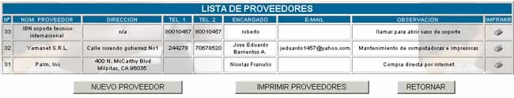
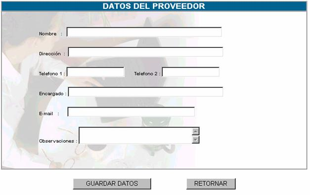

PROVEEDORES
Esta opción sirve para insertar nuevos
proveedores de recursos, que abastecerán a la entidad durante un tiempo
establecido, la pantalla principal que se muestra esta opción es la siguiente:

Donde:
N°;
especifica el número de proveedor que se tiene, este campo no es opcional, el
sistema lo asigna automáticamente y es correlativo.
Nombre del proveedor; especifica el nombre o razón social del proveedor.
Dirección; especifica el lugar de funcionamiento de la empresa
o el domicilio del proveedor.
Telefono1, Teléfono 2; especifica los dos teléfonos fijos del proveedor en
caso de tenerse.
Encargado; especifica el nombre del encargado de la empresa con
el cual se realiza el contrato de provisión.
E-mail; especifica el correo electrónico del proveedor en caso de tenerse.
Observaciones; especifica las observaciones en el momento de
registrar a un proveedor
Imprimir; genera un reporte con los datos del proveedor, en
formato de impresión.
Nuevo Proveedor; para insertar un nuevo proveedor usted debe llenar
los datos que se muestran en la pantalla siguiente:

Nombre; en este campo se coloca el nombre de la entidad o de
la persona la cual se convertirá en el proveedor de cierto recurso, este campo
se debe llenar de manera obligatoria
Dirección; en este campo se especifica la dirección de las
instalaciones de funcionamiento de la empresa proveedora, o la dirección de la
persona en caso de tratarse de una sola persona.
Telefono1; este campo es opcional, se especifica el teléfono
fijo de la empresa o persona.
Teléfono 2; este
campo es opcional y especifica el teléfono fijo o celular de la empresa o
persona proveedor
Encargado; este campo se llena en caso de que el proveedor se
constituya en una empresa.
E-mail; este
campo es opcional, sin embargo debe estar correctamente llenado, es decir que
por tratarse de un correo electrónico debe contener un signo @ y un dominio
válido.
Observaciones; si es que existe alguna observación en el momento
del registro el proveedores, se las coloca, esto es especialmente cuando se
tienen intervalos tiempo de entrega del recurso.
Una vez llenados estos campos presione sobre
el botón GUARDAR DATOS y se mostrará la Lista de Proveedores
Imprimir Proveedores; genera un reporte para impresión de toda la lista de
proveedores.